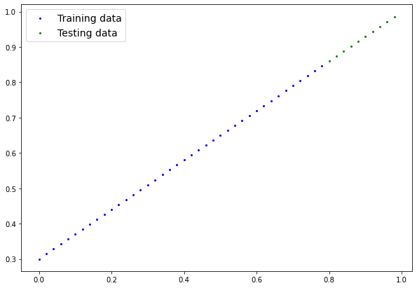
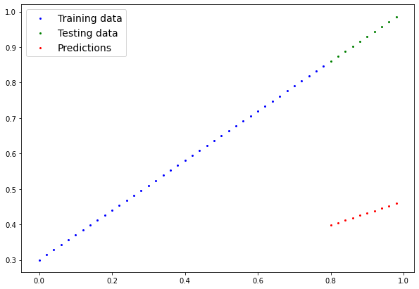
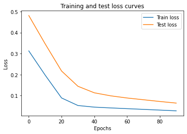
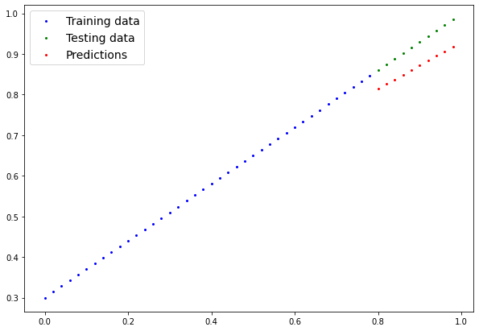
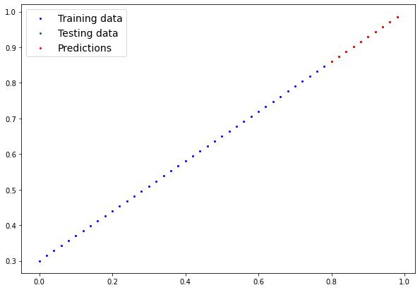

what_were_covering = {1: "data (prepare and load)",
2: "build model",
3: "fitting the model to data (training)",
4: "making predictions and evaluating a model (inference)",
5: "saving and loading a model",
6: "putting it all together"
}3 01 - PyTorch 워크플로우

The essence of machine learning and deep learning is to take some data from the past, build an algorithm (like a neural network) to discover patterns in it and use the discoverd patterns to predict the future.
There are many ways to do this and many new ways are being discovered all the time.
But let’s start small.
How about we start with a straight line?
And we see if we can build a model with PyTorch to that straight line.
3.1 What we’re going to cover
In this module we’re going to cover a standard PyTorch workflow (it can be chopped and changed as necessary but it covers the main outline of steps).

For now, we’ll use this workflow to predict a simple straight line but the workflow steps can be repeated and changed depending on the problem you’re working on.
Specifically, we’re going to cover:
| Topic | Contents |
|---|---|
| 1. Getting data ready | Data can be almost anything but to get started we’re going to create a simple straight line |
| 2. Building a model | Here we’ll create a model to learn patterns in the data, we’ll also choose a loss function, optimizer and build a training loop. |
| 3. Fitting the model to data (training) | We’ve got data and a model, now let’s let the model (try to) find patterns in the (training) data. |
| 4. Making predictions and evaluating a model (inference) | Our model’s found patterns in the data, let’s compare its findings to the actual (testing) data. |
| 5. Saving and loading a model | You may want to use your model elsewhere, or come back to it later, here we’ll cover that. |
| 6. Putting it all together | Let’s take all of the above and combine it. |
3.2 Where can can you get help?
All of the materials for this course are available on GitHub.
And if you run into trouble, you can ask a question on the Discussions page there too.
There’s also the PyTorch developer forums, a very helpful place for all things PyTorch.
Let’s start by putting what we’re covering into a dictionary to reference later.
And now let’s import what we’ll need for this module.
We’re going to get torch, torch.nn (nn stands for neural network and this package contains the building blocks for creating neural networks in PyTorch) and matplotlib.
import torch
from torch import nn # nn contains all of PyTorch's building blocks for neural networks
import matplotlib.pyplot as plt
# Check PyTorch version
torch.__version__'1.11.0'3.3 1. Data (preparing and loading)
I want to stress that “data” in machine learning can be almost anything you can imagine. A table of numbers (like a big Excel spreadsheet), images of any kind, videos (YouTube has lots of data!), audio files like songs or podcasts, protein structures, text and more.

Machine learning is a game of two parts: 1. Turn your data, whatever it is, into numbers (a representation). 2. Pick or build a model to learn the representation as best as possible.
Sometimes one and two can be done at the same time.
But what if you don’t have data?
Well, that’s where we’re at now.
No data.
But we can create some.
Let’s create our data as a straight line.
We’ll use linear regression to create the data with known parameters (things that can be learned by a model) and then we’ll use PyTorch to see if we can build model to estimate these parameters using gradient descent.
Don’t worry if the terms above don’t mean much now, we’ll see them in action and I’ll put extra resources below where you can learn more.
# Create *known* parameters
weight = 0.7
bias = 0.3
# Create data
start = 0
end = 1
step = 0.02
X = torch.arange(start, end, step).unsqueeze(dim=1)
y = weight * X + bias
X[:10], y[:10](tensor([[0.0000],
[0.0200],
[0.0400],
[0.0600],
[0.0800],
[0.1000],
[0.1200],
[0.1400],
[0.1600],
[0.1800]]),
tensor([[0.3000],
[0.3140],
[0.3280],
[0.3420],
[0.3560],
[0.3700],
[0.3840],
[0.3980],
[0.4120],
[0.4260]]))Beautiful! Now we’re going to move towards building a model that can learn the relationship between X (features) and y (labels).
3.3.1 Split data into training and test sets
We’ve got some data.
But before we build a model we need to split it up.
One of most important steps in a machine learning project is creating a training and test set (and when required, a validation set).
Each split of the dataset serves a specific purpose:
| Split | Purpose | Amount of total data | How often is it used? |
|---|---|---|---|
| Training set | The model learns from this data (like the course materials you study during the semester). | ~60-80% | Always |
| Validation set | The model gets tuned on this data (like the practice exam you take before the final exam). | ~10-20% | Often but not always |
| Testing set | The model gets evaluated on this data to test what it has learned (like the final exam you take at the end of the semester). | ~10-20% | Always |
For now, we’ll just use a training and test set, this means we’ll have a dataset for our model to learn on as well as be evaluated on.
We can create them by splitting our X and y tensors.
Note: When dealing with real-world data, this step is typically done right at the start of a project (the test set should always be kept separate from all other data). We want our model to learn on training data and then evaluate it on test data to get an indication of how well it generalizes to unseen examples.
# Create train/test split
train_split = int(0.8 * len(X)) # 80% of data used for training set, 20% for testing
X_train, y_train = X[:train_split], y[:train_split]
X_test, y_test = X[train_split:], y[train_split:]
len(X_train), len(y_train), len(X_test), len(y_test)(40, 40, 10, 10)Wonderful, we’ve got 40 samples for training (X_train & y_train) and 10 samples for testing (X_test & y_test).
The model we create is going to try and learn the relationship between X_train & y_train and then we will evaluate what it learns on X_test and y_test.
But right now our data is just numbers on a page.
Let’s create a function to visualize it.
def plot_predictions(train_data=X_train,
train_labels=y_train,
test_data=X_test,
test_labels=y_test,
predictions=None):
"""
Plots training data, test data and compares predictions.
"""
plt.figure(figsize=(10, 7))
# Plot training data in blue
plt.scatter(train_data, train_labels, c="b", s=4, label="Training data")
# Plot test data in green
plt.scatter(test_data, test_labels, c="g", s=4, label="Testing data")
if predictions is not None:
# Plot the predictions in red (predictions were made on the test data)
plt.scatter(test_data, predictions, c="r", s=4, label="Predictions")
# Show the legend
plt.legend(prop={"size": 14});plot_predictions();
Epic!
Now instead of just being numbers on a page, our data is a straight line.
Note: Now’s a good time to introduce you to the data explorer’s motto… “visualize, visualize, visualize!”
Think of this whenever you’re working with data and turning it into numbers, if you can visualize something, it can do wonders for understanding.
Machines love numbers and we humans like numbers too but we also like to look at things.
3.4 2. Build model
Now we’ve got some data, let’s build a model to use the blue dots to predict the green dots.
We’re going to jump right in.
We’ll write the code first and then explain everything.
Let’s replicate a standard linear regression model using pure PyTorch.
# Create a Linear Regression model class
class LinearRegressionModel(nn.Module): # <- almost everything in PyTorch is a nn.Module (think of this as neural network lego blocks)
def __init__(self):
super().__init__()
self.weights = nn.Parameter(torch.randn(1, # <- start with random weights (this will get adjusted as the model learns)
requires_grad=True, # <- can we update this value with gradient descent?
dtype=torch.float # <- PyTorch loves float32 by default
))
self.bias = nn.Parameter(torch.randn(1, # <- start with random bias (this will get adjusted as the model learns)
requires_grad=True, # <- can we update this value with gradient descent?
dtype=torch.float # <- PyTorch loves float32 by default
))
# Forward defines the computation in the model
def forward(self, x: torch.Tensor) -> torch.Tensor: # <- "x" is the input data (e.g. training/testing features)
return self.weights * x + self.bias # <- this is the linear regression formula (y = m*x + b)Alright there’s a fair bit going on above but let’s break it down bit by bit.
Resource: We’ll be using Python classes to create bits and pieces for building neural networks. If you’re unfamiliar with Python class notation, I’d recommend reading Real Python’s Object Orientating programming in Python 3 guide a few times.
3.4.1 PyTorch model building essentials
PyTorch has four (give or take) essential modules you can use to create almost any kind of neural network you can imagine.
They are torch.nn, torch.optim, torch.utils.data.Dataset and torch.utils.data.DataLoader. For now, we’ll focus on the first two and get to the other two later (though you may be able to guess what they do).
| PyTorch module | What does it do? |
|---|---|
torch.nn |
Contains all of the building blocks for computational graphs (essentially a series of computations executed in a particular way). |
torch.nn.Parameter |
Stores tensors that can be used with nn.Module. If requires_grad=True gradients (used for updating model parameters via gradient descent) are calculated automatically, this is often referred to as “autograd”. |
torch.nn.Module |
The base class for all neural network modules, all the building blocks for neural networks are subclasses. If you’re building a neural network in PyTorch, your models should subclass nn.Module. Requires a forward() method be implemented. |
torch.optim |
Contains various optimization algorithms (these tell the model parameters stored in nn.Parameter how to best change to improve gradient descent and in turn reduce the loss). |
def forward() |
All nn.Module subclasses require a forward() method, this defines the computation that will take place on the data passed to the particular nn.Module (e.g. the linear regression formula above). |
If the above sounds complex, think of like this, almost everything in a PyTorch neural network comes from torch.nn, * nn.Module contains the larger building blocks (layers) * nn.Parameter contains the smaller parameters like weights and biases (put these together to make nn.Module(s)) * foward() tells the larger blocks how to make calculations on inputs (tensors full of data) within nn.Module(s) * torch.optim contains optimization methods on how to improve the parameters within nn.Parameter to better represent input data
 Basic building blocks of creating a PyTorch model by subclassing
Basic building blocks of creating a PyTorch model by subclassing nn.Module. For ojbects that subclass nn.Module, the forward() method must be defined.
Resource: See more of these essential modules and their uses cases in the PyTorch Cheat Sheet.
3.4.2 Checking the contents of a PyTorch model
Now we’ve got these out of the way, let’s create a model instance with the class we’ve made and check its parameters using .parameters().
# Set manual seed since nn.Parameter are randomly initialzied
torch.manual_seed(42)
# Create an instance of the model (this is a subclass of nn.Module that contains nn.Parameter(s))
model_0 = LinearRegressionModel()
# Check the nn.Parameter(s) within the nn.Module subclass we created
list(model_0.parameters())[Parameter containing:
tensor([0.3367], requires_grad=True),
Parameter containing:
tensor([0.1288], requires_grad=True)]We can also get the state (what the model contains) of the model using .state_dict().
# List named parameters
model_0.state_dict()OrderedDict([('weights', tensor([0.3367])), ('bias', tensor([0.1288]))])Notice how the values for weights and bias from model_0.state_dict() come out as random float tensors?
This is because we initialized them above using torch.randn().
Essentially we want to start from random parameters and get the model to update them towards parameters that fit our data best (the hardcoded weight and bias values we set when creating our straight line data).
Exercise: Try changing the
torch.manual_seed()value two cells above, see what happens to the weights and bias values.
Because our model starts with random values, right now it’ll have poor predictive power.
3.4.3 Making predictions using torch.inference_mode()
To check this we can pass it the test data X_test to see how closely it predicts y_test.
When we pass data to our model, it’ll go through the model’s forward() method and produce a result using the computation we’ve defined.
Let’s make some predictions.
# Make predictions with model
with torch.inference_mode():
y_preds = model_0(X_test)
# Note: in older PyTorch code you might also see torch.no_grad()
# with torch.no_grad():
# y_preds = model_0(X_test)Hmm?
You probably noticed we used torch.inference_mode() as a context manager (that’s what the with torch.inference_mode(): is) to make the predictions.
As the name suggests, torch.inference_mode() is used when using a model for inference (making predictions).
torch.inference_mode() turns off a bunch of things (like gradient tracking, which is necessary for training but not for inference) to make forward-passes (data going through the forward() method) faster.
Note: In older PyTorch code, you may also see
torch.no_grad()being used for inference. Whiletorch.inference_mode()andtorch.no_grad()do similar things,torch.inference_mode()is newer, potentially faster and preferred. See this Tweet from PyTorch for more.
We’ve made some predictions, let’s see what they look like.
# Check the predictions
print(f"Number of testing samples: {len(X_test)}")
print(f"Number of predictions made: {len(y_preds)}")
print(f"Predicted values:\n{y_preds}")Number of testing samples: 10
Number of predictions made: 10
Predicted values:
tensor([[0.3982],
[0.4049],
[0.4116],
[0.4184],
[0.4251],
[0.4318],
[0.4386],
[0.4453],
[0.4520],
[0.4588]])Notice how there’s one prediction value per testing sample.
This is because of the kind of data we’re using. For our straight line, one X value maps to one y value.
However, machine learning models are very flexible. You could have 100 X values mapping to one, two, three or 10 y values. It all depends on what you’re working on.
Our predictions are still numbers on a page, let’s visualize them with our plot_predictions() function we created above.
plot_predictions(predictions=y_preds)
y_test - y_predstensor([[0.4618],
[0.4691],
[0.4764],
[0.4836],
[0.4909],
[0.4982],
[0.5054],
[0.5127],
[0.5200],
[0.5272]])Woah! Those predictions look pretty bad…
This make sense though when you remember our model is just using random parameter values to make predictions.
It hasn’t even looked at the blue dots to try to predict the green dots.
Time to change that.
3.5 3. Train model
Right now our model is making predictions using random parameters to make calculations, it’s basically guessing (randomly).
To fix that, we can update its internal parameters (I also refer to parameters as patterns), the weights and bias values we set randomly using nn.Parameter() and torch.randn() to be something that better represents the data.
We could hard code this (since we know the default values weight=0.7 and bias=0.3) but where’s the fun in that?
Much of the time you won’t know what the ideal parameters are for a model.
Instead, it’s much more fun to write code to see if the model can try and figure them out itself.
3.5.1 Creating a loss function and optimizer in PyTorch
For our model to update its parameters on its own, we’ll need to add a few more things to our recipe.
And that’s a loss function as well as an optimizer.
The roles of these are:
| Function | What does it do? | Where does it live in PyTorch? | Common values |
|---|---|---|---|
| Loss function | Measures how wrong your models predictions (e.g. y_preds) are compared to the truth labels (e.g. y_test). Lower the better. |
PyTorch has plenty of built-in loss functions in torch.nn. |
Mean absolute error (MAE) for regression problems (torch.nn.L1Loss()). Binary cross entropy for binary classification problems (torch.nn.BCELoss()). |
| Optimizer | Tells your model how to update its internal parameters to best lower the loss. | You can find various optimization function implementations in torch.optim. |
Stochastic gradient descent (torch.optim.SGD()). Adam optimizer (torch.optim.Adam()). |
Let’s create a loss function and an optimizer we can use to help improve our model.
Depending on what kind of problem you’re working on will depend on what loss function and what optimizer you use.
However, there are some common values, that are known to work well such as the SGD (stochastic gradient descent) or Adam optimizer. And the MAE (mean absolute error) loss function for regression problems (predicting a number) or binary cross entropy loss function for classification problems (predicting one thing or another).
For our problem, since we’re predicting a number, let’s use MAE (which is under torch.nn.L1Loss()) in PyTorch as our loss function.
 Mean absolute error (MAE, in PyTorch:
Mean absolute error (MAE, in PyTorch: torch.nn.L1Loss) measures the absolute difference between two points (predictions and labels) and then takes the mean across all examples.
And we’ll use SGD, torch.optim.SGD(params, lr) where:
paramsis the target model parameters you’d like to optimize (e.g. theweightsandbiasvalues we randomly set before).lris the learning rate you’d like the optimizer to update the parameters at, higher means the optimizer will try larger updates (these can sometimes be too large and the optimizer will fail to work), lower means the optimizer will try smaller updates (these can sometimes be too small and the optimizer will take too long to find the ideal values). The learning rate is considered a hyperparamter (because it’s set by a machine learning engineer). Common starting values for the learning rate are0.01,0.001,0.0001, however, these can also be adjusted over time (this is called learning rate scheduling).
Woah, that’s a lot, let’s see it in code.
# Create the loss function
loss_fn = nn.L1Loss() # MAE loss is same as L1Loss
# Create the optimizer
optimizer = torch.optim.SGD(params=model_0.parameters(), # parameters of target model to optimize
lr=0.01) # learning rate (how much the optimizer should change parameters at each step, higher=more (less stable), lower=less (might take a long time))3.5.2 Creating an optimization loop in PyTorch
Woohoo! Now we’ve got a loss function and an optimizer, it’s now time to create a training loop (and testing loop).
The training loop involves the model going through the training data and learning the relationships between the features and labels.
The testing loop involves going through the testing data and evaluating how good the patterns are that the model learned on the training data (the model never see’s the testing data during training).
Each of these is called a “loop” because we want our model to look (loop through) at each sample in each dataset.
To create these we’re going to write a Python for loop in the theme of the unofficial PyTorch optimization loop song (there’s a video version too).
 The unoffical PyTorch optimization loops song, a fun way to remember the steps in a PyTorch training (and testing) loop.
The unoffical PyTorch optimization loops song, a fun way to remember the steps in a PyTorch training (and testing) loop.
There will be a fair bit of code but nothing we can’t handle.
3.5.3 PyTorch training loop
For the training loop, we’ll build the following steps:
| Number | Step name | What does it do? | Code example |
|---|---|---|---|
| 1 | Forward pass | The model goes through all of the training data once, performing its forward() function calculations. |
model(x_train) |
| 2 | Calculate the loss | The model’s outputs (predictions) are compared to the ground truth and evaluated to see how wrong they are. | loss = loss_fn(y_pred, y_train) |
| 3 | Zero gradients | The optimizers gradients are set to zero (they are accumulated by default) so they can be recalculated for the specific training step. | optimizer.zero_grad() |
| 4 | Perform backpropagation on the loss | Computes the gradient of the loss with respect for every model parameter to be updated (each parameter with requires_grad=True). This is known as backpropagation, hence “backwards”. |
loss.backward() |
| 5 | Update the optimizer (gradient descent) | Update the parameters with requires_grad=True with respect to the loss gradients in order to improve them. |
optimizer.step() |

Note: The above is just one example of how the steps could be ordered or described. With experience you’ll find making PyTorch training loops can be quite flexible.
And on the ordering of things, the above is a good default order but you may see slightly different orders. Some rules of thumb: * Calculate the loss (
loss = ...) before performing backpropagation on it (loss.backward()). * Zero gradients (optimizer.zero_grad()) before computing the gradients of the loss with respect to every model parameter (loss.backward()). * Step the optimizer (optimizer.step()) after performing backpropagation on the loss (loss.backward()).
For resources to help understand what’s happening behind the scenes with backpropagation and gradient descent, see the extra-curriculum section.
3.5.4 PyTorch testing loop
As for the testing loop (evaluating our model), the typical steps include:
| Number | Step name | What does it do? | Code example |
|---|---|---|---|
| 1 | Forward pass | The model goes through all of the training data once, performing its forward() function calculations. |
model(x_test) |
| 2 | Calculate the loss | The model’s outputs (predictions) are compared to the ground truth and evaluated to see how wrong they are. | loss = loss_fn(y_pred, y_test) |
| 3 | Calulate evaluation metrics (optional) | Alongisde the loss value you may want to calculate other evaluation metrics such as accuracy on the test set. | Custom functions |
Notice the testing loop doesn’t contain performing backpropagation (loss.backward()) or stepping the optimizer (optimizer.step()), this is because no parameters in the model are being changed during testing, they’ve already been calculated. For testing, we’re only interested in the output of the forward pass through the model.

Let’s put all of the above together and train our model for 100 epochs (forward passes through the data) and we’ll evaluate it every 10 epochs.
torch.manual_seed(42)
# Set the number of epochs (how many times the model will pass over the training data)
epochs = 100
# Create empty loss lists to track values
train_loss_values = []
test_loss_values = []
epoch_count = []
for epoch in range(epochs):
### Training
# Put model in training mode (this is the default state of a model)
model_0.train()
# 1. Forward pass on train data using the forward() method inside
y_pred = model_0(X_train)
# print(y_pred)
# 2. Calculate the loss (how different are our models predictions to the ground truth)
loss = loss_fn(y_pred, y_train)
# 3. Zero grad of the optimizer
optimizer.zero_grad()
# 4. Loss backwards
loss.backward()
# 5. Progress the optimizer
optimizer.step()
### Testing
# Put the model in evaluation mode
model_0.eval()
with torch.inference_mode():
# 1. Forward pass on test data
test_pred = model_0(X_test)
# 2. Caculate loss on test data
test_loss = loss_fn(test_pred, y_test.type(torch.float)) # predictions come in torch.float datatype, so comparisons need to be done with tensors of the same type
# Print out what's happening
if epoch % 10 == 0:
epoch_count.append(epoch)
train_loss_values.append(loss.detach().numpy())
test_loss_values.append(test_loss.detach().numpy())
print(f"Epoch: {epoch} | MAE Train Loss: {loss} | MAE Test Loss: {test_loss} ")Epoch: 0 | MAE Train Loss: 0.31288138031959534 | MAE Test Loss: 0.48106518387794495
Epoch: 10 | MAE Train Loss: 0.1976713240146637 | MAE Test Loss: 0.3463551998138428
Epoch: 20 | MAE Train Loss: 0.08908725529909134 | MAE Test Loss: 0.21729660034179688
Epoch: 30 | MAE Train Loss: 0.053148526698350906 | MAE Test Loss: 0.14464017748832703
Epoch: 40 | MAE Train Loss: 0.04543796554207802 | MAE Test Loss: 0.11360953003168106
Epoch: 50 | MAE Train Loss: 0.04167863354086876 | MAE Test Loss: 0.09919948130846024
Epoch: 60 | MAE Train Loss: 0.03818932920694351 | MAE Test Loss: 0.08886633068323135
Epoch: 70 | MAE Train Loss: 0.03476089984178543 | MAE Test Loss: 0.0805937647819519
Epoch: 80 | MAE Train Loss: 0.03132382780313492 | MAE Test Loss: 0.07232122868299484
Epoch: 90 | MAE Train Loss: 0.02788739837706089 | MAE Test Loss: 0.06473556160926819 Oh would you look at that! Looks like our loss is going down with every epoch, let’s plot it to find out.
# Plot the loss curves
plt.plot(epoch_count, train_loss_values, label="Train loss")
plt.plot(epoch_count, test_loss_values, label="Test loss")
plt.title("Training and test loss curves")
plt.ylabel("Loss")
plt.xlabel("Epochs")
plt.legend();
Nice! The loss curves show the loss going down over time. Remember, loss is the measure of how wrong your model is, so the lower the better.
But why did the loss go down?
Well, thanks to our loss function and optimizer, the model’s internal parameters (weights and bias) were updated to better reflect the underlying patterns in the data.
Let’s inspect our model’s .state_dict() to see see how close our model gets to the original values we set for weights and bias.
# Find our model's learned parameters
print("The model learned the following values for weights and bias:")
print(model_0.state_dict())
print("\nAnd the original values for weights and bias are:")
print(f"weights: {weight}, bias: {bias}")The model learned the following values for weights and bias:
OrderedDict([('weights', tensor([0.5784])), ('bias', tensor([0.3513]))])
And the original values for weights and bias are:
weights: 0.7, bias: 0.3Wow! How cool is that?
Our model got very close to calculate the exact original values for weight and bias (and it would probably get even closer if we trained it for longer).
Exercise: Try changing the
epochsvalue above to 200, what happens to the loss curves and the weights and bias parameter values of the model?
It’d likely never guess them perfectly (especially when using more complicated datasets) but that’s okay, often you can do very cool things with a close approximation.
This is the whole idea of machine learning and deep learning, there are some ideal values that describe our data and rather than figuring them out by hand, we can train a model to figure them out programmatically.
3.6 4. Making predictions with a trained PyTorch model (inference)
Once you’ve trained a model, you’ll likely want to make predictions with it.
We’ve already seen a glimpse of this in the training and testing code above, the steps to do it outside of the training/testing loop are similar.
There are three things to remember when making predictions (also called performing inference) with a PyTorch model:
- Set the model in evaluation mode (
model.eval()). - Make the predictions using the inference mode context manager (
with torch.inference_mode(): ...). - All predictions should be made with objects on the same device (e.g. data and model on GPU only or data and model on CPU only).
The first two items make sure all helpful calculations and settings PyTorch uses behind the scenes during training but aren’t necessary for inference are turned off (this results in faster computation). And the third ensures that you won’t run into cross-device errors.
# 1. Set the model in evaluation mode
model_0.eval()
# 2. Setup the inference mode context manager
with torch.inference_mode():
# 3. Make sure the calculations are done with the model and data on the same device
# in our case, we haven't setup device-agnostic code yet so our data and model are
# on the CPU by default.
# model_0.to(device)
# X_test = X_test.to(device)
y_preds = model_0(X_test)
y_predstensor([[0.8141],
[0.8256],
[0.8372],
[0.8488],
[0.8603],
[0.8719],
[0.8835],
[0.8950],
[0.9066],
[0.9182]])Nice! We’ve made some predictions with our trained model, now how do they look?
plot_predictions(predictions=y_preds)
Woohoo! Those red dots are looking far closer than they were before!
Let’s get onto saving an reloading a model in PyTorch.
3.7 5. Saving and loading a PyTorch model
If you’ve trained a PyTorch model, chances are you’ll want to save it and export it somewhere.
As in, you might train it on Google Colab or your local machine with a GPU but you’d like to now export it to some sort of application where others can use it.
Or maybe you’d like to save your progress on a model and come back and load it back later.
For saving and loading models in PyTorch, there are three main methods you should be aware of (all of below have been taken from the PyTorch saving and loading models guide):
| PyTorch method | What does it do? |
|---|---|
torch.save |
Saves a serialzed object to disk using Python’s pickle utility. Models, tensors and various other Python objects like dictionaries can be saved using torch.save. |
torch.load |
Uses pickle’s unpickling features to deserialize and load pickled Python object files (like models, tensors or dictionaries) into memory. You can also set which device to load the object to (CPU, GPU etc). |
torch.nn.Module.load_state_dict |
Loads a model’s parameter dictionary (model.state_dict()) using a saved state_dict() object. |
Note: As stated in Python’s
pickledocumentation, thepicklemodule is not secure. That means you should only ever unpickle (load) data you trust. That goes for loading PyTorch models as well. Only ever use saved PyTorch models from sources you trust.
3.7.1 Saving a PyTorch model’s state_dict()
The recommended way for saving and loading a model for inference (making preditions) is by saving and loading a model’s state_dict().
Let’s see how we can do that in a few steps:
- We’ll create a directory for saving models to called
modelsusing Python’spathlibmodule. - We’ll create a file path to save the model to.
- We’ll call
torch.save(obj, f)whereobjis the target model’sstate_dict()andfis the filename of where to save the model.
Note: It’s common convention for PyTorch saved models or objects to end with
.ptor.pth, likesaved_model_01.pth.
from pathlib import Path
# 1. Create models directory
MODEL_PATH = Path("models")
MODEL_PATH.mkdir(parents=True, exist_ok=True)
# 2. Create model save path
MODEL_NAME = "01_pytorch_workflow_model_0.pth"
MODEL_SAVE_PATH = MODEL_PATH / MODEL_NAME
# 3. Save the model state dict
print(f"Saving model to: {MODEL_SAVE_PATH}")
torch.save(obj=model_0.state_dict(), # only saving the state_dict() only saves the models learned parameters
f=MODEL_SAVE_PATH) Saving model to: models/01_pytorch_workflow_model_0.pth# Check the saved file path
!ls -l models/01_pytorch_workflow_model_0.pth-rw-rw-r-- 1 daniel daniel 1063 May 10 10:26 models/01_pytorch_workflow_model_0.pth3.7.2 Loading a saved PyTorch model’s state_dict()
Since we’ve now got a saved model state_dict() at models/01_pytorch_workflow_model_0.pth we can now load it in using torch.nn.Module.load_state_dict(torch.load(f)) where f is the filepath of our saved model state_dict().
Why call torch.load() inside torch.nn.Module.load_state_dict()?
Because we only saved the model’s state_dict() which is a dictionary of learned parameters and not the entire model, we first have to load the state_dict() with torch.load() and then pass that state_dict() to a new instance of our model (which is a subclass of nn.Module).
Why not save the entire model?
Saving the entire model rather than just the state_dict() is more intuitive, however, to quote the PyTorch documentation (italics mine):
The disadvantage of this approach (saving the whole model) is that the serialized data is bound to the specific classes and the exact directory structure used when the model is saved…
Because of this, your code can break in various ways when used in other projects or after refactors.
So instead, we’re using the flexible method of saving and loading just the state_dict(), which again is basically a dictionary of model parameters.
Let’s test it out by created another instance of LinearRegressionModel(), which is a subclass of torch.nn.Module and will hence have the in-built method load_state_dict().
# Instantiate a new instance of our model (this will be instantiated with random weights)
loaded_model_0 = LinearRegressionModel()
# Load the state_dict of our saved model (this will update the new instance of our model with trained weights)
loaded_model_0.load_state_dict(torch.load(f=MODEL_SAVE_PATH))<All keys matched successfully>Excellent! It looks like things matched up.
Now to test our loaded model, let’s perform inference with it (make predictions) on the test data.
Remember the rules for performing inference with PyTorch models?
If not, here’s a refresher:
PyTorch inference rules
-
Set the model in evaluation mode (
model.eval()). -
Make the predictions using the inference mode context manager (
with torch.inference_mode(): …). - All predictions should be made with objects on the same device (e.g. data and model on GPU only or data and model on CPU only).
# 1. Put the loaded model into evaluation mode
loaded_model_0.eval()
# 2. Use the inference mode context manager to make predictions
with torch.inference_mode():
loaded_model_preds = loaded_model_0(X_test) # perform a forward pass on the test data with the loaded modelNow we’ve made some predictions with the loaded model, let’s see if they’re the same as the previous predictions.
# Compare previous model predictions with loaded model predictions (these should be the same)
y_preds == loaded_model_predstensor([[True],
[True],
[True],
[True],
[True],
[True],
[True],
[True],
[True],
[True]])Nice!
It looks like the loaded model predictions are the same as the previous model predictions (predictions made prior to saving). This indicates our model is saving and loading as expected.
Note: There are more methods to save and load PyTorch models but I’ll leave these for extra-curriculum and further reading. See the PyTorch guide for saving and loading models for more.
3.8 6. Putting it all together
We’ve covered a fair bit of ground so far.
But once you’ve had some practice, you’ll be performing the above steps like dancing down the street.
Speaking of practice, let’s put everything we’ve done so far together.
Except this time we’ll make our code device agnostic (so if there’s a GPU available, it’ll use it and if not, it will default to the CPU).
There’ll be far less commentary in this section than above since what we’re going to go through has already been covered.
We’ll start by importing the standard libraries we need.
Note: If you’re using Google Colab, to setup a GPU, go to Runtime -> Change runtime type -> Hardware acceleration -> GPU. If you do this, it will reset the Colab runtime and you will lose saved variables.
# Import PyTorch and matplotlib
import torch
from torch import nn # nn contains all of PyTorch's building blocks for neural networks
import matplotlib.pyplot as plt
# Check PyTorch version
torch.__version__'1.11.0'Now let’s start making our code device agnostic by setting device="cuda" if it’s available, otherwise it’ll default to device="cpu".
# Setup device agnostic code
device = "cuda" if torch.cuda.is_available() else "cpu"
print(f"Using device: {device}")Using device: cudaIf you’ve got access to a GPU, the above should’ve printed out:
Using device: cudaOtherwise, you’ll be using a CPU for the following computations. This is fine for our small dataset but it will take longer for larger datasets.
3.8.1 6.1 Data
Let’s create some data just like before.
First, we’ll hard-code some weight and bias values.
Then we’ll make a range of numbers between 0 and 1, these will be our X values.
Finally, we’ll use the X values, as well as the weight and bias values to create y using the linear regression formula (y = weight * X + bias).
# Create weight and bias
weight = 0.7
bias = 0.3
# Create range values
start = 0
end = 1
step = 0.02
# Create X and y (features and labels)
X = torch.arange(start, end, step).unsqueeze(dim=1) # without unsqueeze, errors will happen later on (shapes within linear layers)
y = weight * X + bias
X[:10], y[:10](tensor([[0.0000],
[0.0200],
[0.0400],
[0.0600],
[0.0800],
[0.1000],
[0.1200],
[0.1400],
[0.1600],
[0.1800]]),
tensor([[0.3000],
[0.3140],
[0.3280],
[0.3420],
[0.3560],
[0.3700],
[0.3840],
[0.3980],
[0.4120],
[0.4260]]))Wonderful!
Now we’ve got some data, let’s split it into training and test sets.
We’ll use an 80/20 split with 80% training data and 20% testing data.
# Split data
train_split = int(0.8 * len(X))
X_train, y_train = X[:train_split], y[:train_split]
X_test, y_test = X[train_split:], y[train_split:]
len(X_train), len(y_train), len(X_test), len(y_test)(40, 40, 10, 10)Excellent, let’s visualize them to make sure they look okay.
# Note: If you've reset your runtime, this function won't work,
# you'll have to rerun the cell above where it's instantiated.
plot_predictions(X_train, y_train, X_test, y_test)
3.8.2 6.2 Building a PyTorch linear model
We’ve got some data, now it’s time to make a model.
We’ll create the same style of model as before except this time, instead of defining the weight and bias parameters of our model manually using nn.Parameter(), we’ll use nn.Linear(in_features, out_features) to do it for us.
Where in_features is the number of dimensions your input data has and out_features is the number of dimensions you’d like it to be output to.
In our case, both of these are 1 since our data has 1 input feature (X) per label (y).
 Creating a linear regression model using
Creating a linear regression model using nn.Parameter versus using nn.Linear. There are plenty more examples of where the torch.nn module has pre-built computations, including many popular and useful neural network layers.
# Subclass nn.Module to make our model
class LinearRegressionModelV2(nn.Module):
def __init__(self):
super().__init__()
# Use nn.Linear() for creating the model parameters
self.linear_layer = nn.Linear(in_features=1,
out_features=1)
# Define the forward computation (input data x flows through nn.Linear())
def forward(self, x: torch.Tensor) -> torch.Tensor:
return self.linear_layer(x)
# Set the manual seed when creating the model (this isn't always need but is used for demonstrative purposes, try commenting it out and seeing what happens)
torch.manual_seed(42)
model_1 = LinearRegressionModelV2()
model_1, model_1.state_dict()(LinearRegressionModelV2(
(linear_layer): Linear(in_features=1, out_features=1, bias=True)
),
OrderedDict([('linear_layer.weight', tensor([[0.7645]])),
('linear_layer.bias', tensor([0.8300]))]))Notice the outputs of model_1.state_dict(), the nn.Linear() layer created a random weight and bias parameter for us.
Now let’s put our model on the GPU (if it’s available).
We can change the device our PyTorch objects are on using .to(device).
First let’s check the model’s current device.
# Check model device
next(model_1.parameters()).devicedevice(type='cpu')Wonderful, looks like the model’s on the CPU by default.
Let’s change it to be on the GPU (if it’s available).
# Set model to GPU if it's availalble, otherwise it'll default to CPU
model_1.to(device) # the device variable was set above to be "cuda" if available or "cpu" if not
next(model_1.parameters()).devicedevice(type='cuda', index=0)Nice! Because of our device agnostic code, the above cell will work regardless of whether a GPU is available or not.
If you do have access to a CUDA-enabled GPU, you should see an output of something like:
device(type='cuda', index=0)3.8.3 6.3 Training
Time to build a training and testing loop.
First we’ll need a loss function and an optimizer.
Let’s use the same functions we used earlier, nn.L1Loss() and torch.optim.SGD().
We’ll have to pass the new model’s parameters (model.parameters()) to the optimizer for it to adjust them during training.
The learning rate of 0.1 worked well before too so let’s use that again.
# Create loss function
loss_fn = nn.L1Loss()
# Create optimizer
optimizer = torch.optim.SGD(params=model_1.parameters(), # optimize newly created model's parameters
lr=0.01)Beautiful, loss function and optimizer ready, now let’s train and evaluate our model using a training and testing loop.
The only different thing we’ll be doing in this step compared to the previous training loop is putting the data on the target device.
We’ve already put our model on the target device using model_1.to(device).
And we can do the same with the data.
That way if the model is on the GPU, the data is on the GPU (and vice versa).
Let’s step things up a notch this time and set epochs=1000.
If you need a reminder of the PyTorch training loop steps, see below.
PyTorch training loop steps
-
Forward pass - The model goes through all of the training data once, performing its
forward()function calculations (model(x_train)). -
Calculate the loss - The model’s outputs (predictions) are compared to the ground truth and evaluated to see how wrong they are (
loss = loss_fn(y_pred, y_train). -
Zero gradients - The optimizers gradients are set to zero (they are accumulated by default) so they can be recalculated for the specific training step (
optimizer.zero_grad()). -
Perform backpropagation on the loss - Computes the gradient of the loss with respect for every model parameter to be updated (each parameter with
requires_grad=True). This is known as backpropagation, hence “backwards” (loss.backward()). -
Step the optimizer (gradient descent) - Update the parameters with
requires_grad=Truewith respect to the loss gradients in order to improve them (optimizer.step()).
torch.manual_seed(42)
# Set the number of epochs
epochs = 1000
# Put data on the available device
# Without this, error will happen (not all model/data on device)
X_train = X_train.to(device)
X_test = X_test.to(device)
y_train = y_train.to(device)
y_test = y_test.to(device)
for epoch in range(epochs):
### Training
model_1.train() # train mode is on by default after construction
# 1. Forward pass
y_pred = model_1(X_train)
# 2. Calculate loss
loss = loss_fn(y_pred, y_train)
# 3. Zero grad optimizer
optimizer.zero_grad()
# 4. Loss backward
loss.backward()
# 5. Step the optimizer
optimizer.step()
### Testing
model_1.eval() # put the model in evaluation mode for testing (inference)
# 1. Forward pass
with torch.inference_mode():
test_pred = model_1(X_test)
# 2. Calculate the loss
test_loss = loss_fn(test_pred, y_test)
if epoch % 100 == 0:
print(f"Epoch: {epoch} | Train loss: {loss} | Test loss: {test_loss}")Epoch: 0 | Train loss: 0.5551779866218567 | Test loss: 0.5739762187004089
Epoch: 100 | Train loss: 0.006215683650225401 | Test loss: 0.014086711220443249
Epoch: 200 | Train loss: 0.0012645035749301314 | Test loss: 0.013801801018416882
Epoch: 300 | Train loss: 0.0012645035749301314 | Test loss: 0.013801801018416882
Epoch: 400 | Train loss: 0.0012645035749301314 | Test loss: 0.013801801018416882
Epoch: 500 | Train loss: 0.0012645035749301314 | Test loss: 0.013801801018416882
Epoch: 600 | Train loss: 0.0012645035749301314 | Test loss: 0.013801801018416882
Epoch: 700 | Train loss: 0.0012645035749301314 | Test loss: 0.013801801018416882
Epoch: 800 | Train loss: 0.0012645035749301314 | Test loss: 0.013801801018416882
Epoch: 900 | Train loss: 0.0012645035749301314 | Test loss: 0.013801801018416882Note: Due to the random nature of machine learning, you will likely get slightly different results (different loss and prediction values) depending on whether your model was trained on CPU or GPU. This is true even if you use the same random seed on either device. If the difference is large, you may want to look for errors, however, if it is small (ideally it is), you can ignore it.
Nice! That loss looks pretty low.
Let’s check the parameters our model has learned and compare them to the original parameters we hard-coded.
# Find our model's learned parameters
from pprint import pprint # pprint = pretty print, see: https://docs.python.org/3/library/pprint.html
print("The model learned the following values for weights and bias:")
pprint(model_1.state_dict())
print("\nAnd the original values for weights and bias are:")
print(f"weights: {weight}, bias: {bias}")The model learned the following values for weights and bias:
OrderedDict([('linear_layer.weight', tensor([[0.6968]], device='cuda:0')),
('linear_layer.bias', tensor([0.3025], device='cuda:0'))])
And the original values for weights and bias are:
weights: 0.7, bias: 0.3Ho ho! Now that’s pretty darn close to a perfect model.
Remember though, in practice, it’s rare that you’ll know the perfect parameters ahead of time.
And if you knew the parameters your model had to learn ahead of time, what would be the fun of machine learning?
Plus, in many real-world machine learning problems, the number of parameters can well exceed tens of millions.
I don’t know about you but I’d rather write code for a computer to figure those out rather than doing it by hand.
3.8.4 6.4 Making predictions
Now we’ve got a trained model, let’s turn on it’s evaluation mode and make some predictions.
# Turn model into evaluation mode
model_1.eval()
# Make predictions on the test data
with torch.inference_mode():
y_preds = model_1(X_test)
y_predstensor([[0.8600],
[0.8739],
[0.8878],
[0.9018],
[0.9157],
[0.9296],
[0.9436],
[0.9575],
[0.9714],
[0.9854]], device='cuda:0')If you’re making predictions with data on the GPU, you might notice the output of the above has device='cuda:0' towards the end. That means the data is on CUDA device 0 (the first GPU your system has access to due to zero-indexing), if you end up using multiple GPUs in the future, this number may be higher.
Now let’s plot our model’s predictions.
Note: Many data science libraries such as pandas, matplotlib and NumPy aren’t capable of using data that is stored on GPU. So you might run into some issues when trying to use a function from one of these libraries with tensor data not stored on the CPU. To fix this, you can call
.cpu()on your target tensor to return a copy of your target tensor on the CPU.
# plot_predictions(predictions=y_preds) # -> won't work... data not on CPU
# Put data on the CPU and plot it
plot_predictions(predictions=y_preds.cpu())
Woah! Look at those red dots, they line up almost perfectly with the green dots. I guess the extra epochs helped.
3.8.5 6.5 Saving and loading a model
We’re happy with our models predictions, so let’s save it to file so it can be used later.
from pathlib import Path
# 1. Create models directory
MODEL_PATH = Path("models")
MODEL_PATH.mkdir(parents=True, exist_ok=True)
# 2. Create model save path
MODEL_NAME = "01_pytorch_workflow_model_1.pth"
MODEL_SAVE_PATH = MODEL_PATH / MODEL_NAME
# 3. Save the model state dict
print(f"Saving model to: {MODEL_SAVE_PATH}")
torch.save(obj=model_1.state_dict(), # only saving the state_dict() only saves the models learned parameters
f=MODEL_SAVE_PATH) Saving model to: models/01_pytorch_workflow_model_1.pthAnd just to make sure everything worked well, let’s load it back in.
We’ll: * Create a new instance of the LinearRegressionModelV2() class * Load in the model state dict using torch.nn.Module.load_state_dict() * Send the new instance of the model to the target device (to ensure our code is device-agnostic)
# Instantiate a fresh instance of LinearRegressionModelV2
loaded_model_1 = LinearRegressionModelV2()
# Load model state dict
loaded_model_1.load_state_dict(torch.load(MODEL_SAVE_PATH))
# Put model to target device (if your data is on GPU, model will have to be on GPU to make predictions)
loaded_model_1.to(device)
print(f"Loaded model:\n{loaded_model_1}")
print(f"Model on device:\n{next(loaded_model_1.parameters()).device}")Loaded model:
LinearRegressionModelV2(
(linear_layer): Linear(in_features=1, out_features=1, bias=True)
)
Model on device:
cuda:0Now we can evaluate the loaded model to see if its predictions line up with the predictions made prior to saving.
# Evaluate loaded model
loaded_model_1.eval()
with torch.inference_mode():
loaded_model_1_preds = loaded_model_1(X_test)
y_preds == loaded_model_1_predstensor([[True],
[True],
[True],
[True],
[True],
[True],
[True],
[True],
[True],
[True]], device='cuda:0')Everything adds up! Nice!
Well, we’ve come a long way. You’ve now built and trained your first two neural network models in PyTorch!
Time to practice your skills.
3.9 Exercises
All exercises have been inspired from code throughout the notebook.
There is one exercise per major section.
You should be able to complete them by referencing their specific section.
Note: For all exercises, your code should be device agnostic (meaning it could run on CPU or GPU if it’s available).
- Create a straight line dataset using the linear regression formula (
weight * X + bias).
- Set
weight=0.3andbias=0.9there should be at least 100 datapoints total. - Split the data into 80% training, 20% testing.
- Plot the training and testing data so it becomes visual.
- Build a PyTorch model by subclassing
nn.Module.
- Inside should be a randomly initialized
nn.Parameter()withrequires_grad=True, one forweightsand one forbias. - Implement the
forward()method to compute the linear regression function you used to create the dataset in 1. - Once you’ve constructed the model, make an instance of it and check its
state_dict(). - Note: If you’d like to use
nn.Linear()instead ofnn.Parameter()you can.
- Create a loss function and optimizer using
nn.L1Loss()andtorch.optim.SGD(params, lr)respectively.
- Set the learning rate of the optimizer to be 0.01 and the parameters to optimize should be the model parameters from the model you created in 2.
- Write a training loop to perform the appropriate training steps for 300 epochs.
- The training loop should test the model on the test dataset every 20 epochs.
- Make predictions with the trained model on the test data.
- Visualize these predictions against the original training and testing data (note: you may need to make sure the predictions are not on the GPU if you want to use non-CUDA-enabled libraries such as matplotlib to plot).
- Save your trained model’s
state_dict()to file.
- Create a new instance of your model class you made in 2. and load in the
state_dict()you just saved to it. - Perform predictions on your test data with the loaded model and confirm they match the original model predictions from 4.
Resource: See the exercises notebooks templates and solutions on the course GitHub.
3.10 Extra-curriculum
- Listen to The Unofficial PyTorch Optimization Loop Song (to help remember the steps in a PyTorch training/testing loop).
- Read What is
torch.nn, really? by Jeremy Howard for a deeper understanding of how one of the most important modules in PyTorch works. - Spend 10-minutes scrolling through and checking out the PyTorch documentation cheatsheet for all of the different PyTorch modules you might come across.
- Spend 10-minutes reading the loading and saving documentation on the PyTorch website to become more familiar with the different saving and loading options in PyTorch.
- Spend 1-2 hours read/watching the following for an overview of the internals of gradient descent and backpropagation, the two main algorithms that have been working in the background to help our model learn.
- Wikipedia page for gradient descent
- Gradient Descent Algorithm — a deep dive by Robert Kwiatkowski
- Gradient descent, how neural networks learn video by 3Blue1Brown
- What is backpropagation really doing? video by 3Blue1Brown
- Backpropagation Wikipedia Page